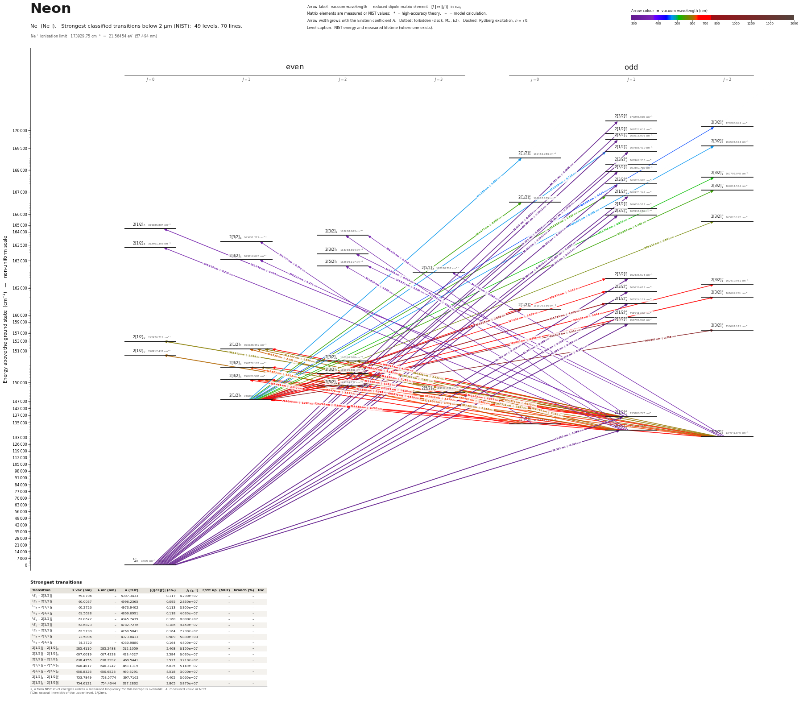

Neon energy level diagram
Energy levels and transitions of neutral neon (Ne I): the 74 strongest classified lines below 2 µm from the NIST Atomic Spectra Database and the 49 levels they connect, each line with its vacuum wavelength, frequency and, for 70 of them, the reduced dipole matrix element derived from the NIST transition rate. Measured lifetimes, transition rates, hyperfine constants and isotope shifts from the literature are included, each with its citation.
Hover a line or a level to isolate it, click to keep it selected. Scroll to zoom, drag to move.

Download: diagram (PDF) diagram (SVG) transitions (CSV) levels (CSV) source code

Key transitions of neon
| Transition | λ vac (nm) | λ air (nm) | ν (THz) | |⟨J‖er‖J′⟩| (ea₀) | A (s⁻¹) | Γ/2π up. (MHz) | branch (%) | Use |
|---|---|---|---|---|---|---|---|---|
| 1S0 – 2[1/2]°1 | 73.5896 | – | 4073.8413 | 0.589 | 5.880e+08 | 97.16 | 96.3 | 73.6 nm resonance line |
| 1S0 – 2[3/2]°1 | 74.3720 | – | 4030.9880 | 0.164 | 4.400e+07 | 7.978 | 87.8 | 74.4 nm resonance line |
| 1S0 – 2[3/2]°2 | 74.6036 | – | 4018.4733 | – | 6.790e-02 | 1.08e-08 | 100 | 74.6 nm M2 decay of the metastable 3P2 state |
| 2[3/2]°2 – 2[3/2]2 | 614.4763 | 614.3063 | 487.8829 | 4.018 | 2.820e+07 | 8.079 | 55.5 | 614.3 nm line used for collinear laser spectroscopy of Ne… |
| 2[3/2]°2 – 2[5/2]3 | 640.4017 | 640.2247 | 468.1319 | 6.835 | 5.149e+07 | 8.162 | 100 | 640.2 nm laser-cooling / MOT line |
λ, ν from NIST level energies unless a measured frequency for this isotope is available. A: measured value or NIST. Γ/2π: natural linewidth of the upper level, 1/(2πτ).
21Ne hyperfine structure (I = 3/2)
| Level | A (MHz) | B (MHz) | Shift of each F level from the centre of gravity (MHz) |
|---|---|---|---|
| 2[3/2]°2 | -267.68(3) | -111.55(10) | F=1/2: +1106.95 F=3/2: +803.04 F=5/2: +203.56 F=7/2: -830.93 |
| 2[5/2]3 | -142.40(20) | -107.7(11) | F=3/2: +789.78 F=5/2: +514.55 F=7/2: +53.85 F=9/2: -667.73 |
| 2[3/2]2 | -185.83(21) | – | F=1/2: +836.24 F=3/2: +557.49 F=5/2: +92.92 F=7/2: -557.49 |
Measured A, B constants; sources in the data file.
Isotope shifts
| Transition | λ vac (nm) | Isotopes | Shift (MHz) |
|---|---|---|---|
| 1S0 – 2[3/2]°1 | 62.974 | 22-20 | 2298(31) |
| 1S0 – 2[1/2]°1 | 73.590 | 22-20 | -90(90) |
| 1S0 – 2[3/2]°1 | 74.372 | 22-20 | 420(90) |
| 2[3/2]°1 – 2[1/2]0 | 540.206 | 22-20 | 1804(26) |
| 2[1/2]°1 – 2[1/2]0 | 585.411 | 22-20 | 2286.3(27) |
| 2[3/2]°2 – 2[1/2]1 | 588.352 | 22-20 | 1737.0(5) |
| 2[3/2]°2 – 2[3/2]2 | 594.648 | 22-20 | 1716.0(11) |
| 2[3/2]°2 – 2[3/2]1 | 597.719 | 22-20 | 1727.4(19) |
| 2[3/2]°1 – 2[1/2]1 | 603.167 | 22-20 | 1744(5) |
| 2[3/2]°1 – 2[1/2]0 | 607.602 | 22-20 | 1702.0(25) |
| 2[3/2]°1 – 2[3/2]2 | 609.785 | 22-20 | 1725.3(25) |
| 2[3/2]°1 – 2[3/2]1 | 613.015 | 22-20 | 1737.6(20) |
| 2[3/2]°2 – 2[3/2]2 | 614.476 | 22-20 | 1663.0(12) |
| 2[3/2]°2 – 2[3/2]2 | 614.476 | 21-20 | 874.94 |
| 2[1/2]°0 – 2[1/2]1 | 616.530 | 22-20 | 1656.4(28) |
| 2[3/2]°2 – 2[3/2]1 | 621.900 | 22-20 | 1669.43(8) |
| 2[1/2]°0 – 2[3/2]1 | 626.823 | 22-20 | 1647.38(14) |
| 2[3/2]°1 – 2[3/2]2 | 630.653 | 22-20 | 1674.27(19) |
| 2[3/2]°2 – 2[5/2]2 | 633.618 | 22-20 | 1641.05(16) |
| 2[3/2]°1 – 2[3/2]1 | 638.476 | 22-20 | 1679.60(26) |
| 2[3/2]°2 – 2[5/2]3 | 640.402 | 22-20 | 1626.05(11) |
| 2[3/2]°2 – 2[5/2]3 | 640.402 | 21-20 | 855.7(10) |
Shift = ν(first isotope) − ν(second isotope).
Listed Ne transitions below 2 µm
| Lower level | Upper level | λ vacuum (nm) | λ air (nm) | ν (THz) | Type | |⟨J‖er‖J′⟩| (ea₀) | A (s⁻¹) | Branching (%) | Source of matrix element / A |
|---|---|---|---|---|---|---|---|---|---|
| 1S0 | 2[3/2]°1 | 58.7213 | – | 5105.3459 | E1 | 0.0666 NIST | 1.480e+07 NIST | – | NIST ASD (accuracy B) |
| 1S0 | 2[1/2]°1 | 58.9179 | – | 5088.3064 | E1 | 0.055 NIST | 9.990e+06 NIST | – | NIST ASD (accuracy C+) |
| 1S0 | 2[3/2]°1 | 58.9911 | – | 5081.9916 | E1 | 0.0892 NIST | 2.620e+07 NIST | – | NIST ASD (accuracy C+) |
| 1S0 | 2[1/2]°1 | 59.0011 | – | 5081.1350 | E1 | 0.0508 NIST | 8.500e+06 NIST | – | NIST ASD (accuracy D+) |
| 1S0 | 2[3/2]°1 | 59.1830 | – | 5065.5138 | E1 | 0.0795 NIST | 2.060e+07 NIST | – | NIST ASD (accuracy B+) |
| 1S0 | 2[3/2]°1 | 59.5920 | – | 5030.7502 | E1 | 0.0937 NIST | 2.800e+07 NIST | – | NIST ASD (accuracy A) |
| 1S0 | 2[3/2]°1 | 59.8706 | – | 5007.3433 | E1 | 0.117 NIST | 4.290e+07 NIST | – | NIST ASD (accuracy B) |
| 1S0 | 2[1/2]°1 | 59.8891 | – | 5005.7948 | E1 | 0.0695 NIST | 1.520e+07 NIST | – | NIST ASD (accuracy C) |
| 1S0 | 2[1/2]°1 | 60.0037 | – | 4996.2365 | E1 | 0.0955 NIST | 2.850e+07 NIST | – | NIST ASD (accuracy B+) |
| 1S0 | 2[3/2]°1 | 60.2726 | – | 4973.9402 | E1 | 0.113 NIST | 3.950e+07 NIST | – | NIST ASD (accuracy A) |
| 1S0 | 2[3/2]°1 | 61.5628 | – | 4869.6991 | E1 | 0.118 NIST | 4.030e+07 NIST | – | NIST ASD (accuracy B+) |
| 1S0 | 2[3/2]°1 | 61.8672 | – | 4845.7439 | E1 | 0.168 NIST | 8.000e+07 NIST | – | NIST ASD (accuracy B) |
| 1S0 | 2[1/2]°1 | 61.9102 | – | 4842.3729 | E1 | 0.0967 NIST | 2.660e+07 NIST | – | NIST ASD (accuracy C) |
| 1S0 | 2[1/2]°1 | 62.6823 | – | 4782.7276 | E1 | 0.186 NIST | 9.450e+07 NIST | – | NIST ASD (accuracy B+) |
| 1S0 | 2[3/2]°1 | 62.9739 | – | 4760.5841 | E1 | 0.164 NIST | 7.230e+07 NIST | – | NIST ASD (accuracy B+) |
| 1S0 | 2[1/2]°1 | 73.5896 | – | 4073.8413 | E1 | 0.589 NIST | 5.880e+08 NIST | 96.3 | NIST ASD (accuracy A) |
| 1S0 | 2[3/2]°1 | 74.3720 | – | 4030.9880 | E1 | 0.164 NIST | 4.400e+07 NIST | 87.8 | NIST ASD (accuracy A) |
| 1S0 | 2[3/2]°2 | 74.6036 | – | 4018.4733 | M2 | – | 6.790e-02 measured | 100 | Zinner, Spoden, Kraemer, Birkl, Ertmer, Phys. Rev. A 67, 010501(R) (2003) (abstract) |
| 2[3/2]°1 | 2[3/2]2 | 341.8883 | 341.7903 | 876.8724 | E1 | 0.293 NIST | 8.700e+05 NIST | – | NIST ASD (accuracy C) |
| 2[3/2]°2 | 2[3/2]2 | 344.8690 | 344.7702 | 869.2936 | E1 | 0.464 NIST | 2.130e+06 NIST | – | NIST ASD (accuracy C+) |
| 2[3/2]°1 | 2[1/2]0 | 345.5184 | 345.4194 | 867.6599 | E1 | 0.274 NIST | 3.680e+06 NIST | – | NIST ASD (accuracy C) |
| 2[3/2]°2 | 2[5/2]2 | 346.5330 | 346.4338 | 865.1194 | E1 | 0.256 NIST | 6.400e+05 NIST | – | NIST ASD (accuracy C) |
| 2[1/2]°0 | 2[3/2]1 | 346.7571 | 346.6578 | 864.5604 | E1 | 0.278 NIST | 1.250e+06 NIST | – | NIST ASD (accuracy C) |
| 2[3/2]°2 | 2[5/2]3 | 347.3565 | 347.2571 | 863.0685 | E1 | 0.495 NIST | 1.690e+06 NIST | – | NIST ASD (accuracy C+) |
| 2[3/2]°1 | 2[3/2]1 | 350.2218 | 350.1216 | 856.0075 | E1 | 0.276 NIST | 1.200e+06 NIST | – | NIST ASD (accuracy C) |
| 2[3/2]°1 | 2[5/2]2 | 351.6195 | 351.5190 | 852.6046 | E1 | 0.268 NIST | 6.700e+05 NIST | – | NIST ASD (accuracy C) |
| 2[1/2]°1 | 2[1/2]0 | 352.1478 | 352.0471 | 851.3257 | E1 | 0.404 NIST | 7.580e+06 NIST | – | NIST ASD (accuracy C+) |
| 2[1/2]°1 | 2[3/2]2 | 359.4551 | 359.3526 | 834.0192 | E1 | 0.319 NIST | 8.870e+05 NIST | – | NIST ASD (accuracy C+) |
| 2[1/2]1 | 2[3/2]°2 | 453.9027 | 453.7755 | 660.4773 | E1 | 0.434 NIST | 8.160e+05 NIST | – | NIST ASD (accuracy C+) |
| 2[1/2]1 | 2[3/2]°2 | 470.5711 | 470.4395 | 637.0821 | E1 | 0.735 NIST | 2.100e+06 NIST | – | NIST ASD (accuracy C+) |
| 2[1/2]1 | 2[1/2]°1 | 471.0176 | 470.8858 | 636.4783 | E1 | 0.710 NIST | 3.260e+06 NIST | – | NIST ASD (accuracy C+) |
| 2[1/2]1 | 2[1/2]°0 | 471.1382 | 471.0064 | 636.3154 | E1 | 0.460 NIST | 4.090e+06 NIST | – | NIST ASD (accuracy C+) |
| 2[1/2]1 | 2[3/2]°2 | 511.7928 | 511.6502 | 585.7692 | E1 | 0.926 NIST | 2.590e+06 NIST | – | NIST ASD (accuracy C+) |
| 2[1/2]1 | 2[3/2]°2 | 533.2260 | 533.0777 | 562.2240 | E1 | 1.408 NIST | 5.300e+06 NIST | – | NIST ASD (accuracy C+) |
| 2[1/2]1 | 2[1/2]°1 | 534.2579 | 534.1093 | 561.1381 | E1 | 1.322 NIST | 7.740e+06 NIST | – | NIST ASD (accuracy C+) |
| 2[1/2]1 | 2[1/2]°0 | 534.4768 | 534.3282 | 560.9082 | E1 | 0.858 NIST | 9.760e+06 NIST | – | NIST ASD (accuracy C+) |
| 2[3/2]°1 | 2[1/2]0 | 540.2063 | 540.0562 | 554.9592 | E1 | – | – | – | – |
| 2[1/2]1 | 2[3/2]°2 | 569.1394 | 568.9816 | 526.7469 | E1 | 0.801 NIST | 1.410e+06 NIST | – | NIST ASD (accuracy B+) |
| 2[1/2]°1 | 2[1/2]0 | 585.4110 | 585.2488 | 512.1059 | E1 | 2.468 NIST | 6.150e+07 NIST | 88.6 | NIST ASD (accuracy AA) |
| 2[3/2]°2 | 2[1/2]1 | 588.3525 | 588.1895 | 509.5456 | E1 | 1.862 NIST | 1.150e+07 NIST | 21.6 | NIST ASD (accuracy B+) |
| 2[3/2]°2 | 2[3/2]2 | 594.6481 | 594.4834 | 504.1510 | E1 | 2.421 NIST | 1.130e+07 NIST | 21.6 | NIST ASD (accuracy B+) |
| 2[3/2]°2 | 2[3/2]1 | 597.7189 | 597.5534 | 501.5609 | E1 | 1.053 NIST | 3.510e+06 NIST | 6.98 | NIST ASD (accuracy B+) |
| 2[3/2]°1 | 2[1/2]1 | 603.1667 | 602.9997 | 497.0309 | E1 | 1.350 NIST | 5.610e+06 NIST | 10.5 | NIST ASD (accuracy B+) |
| 2[3/2]°1 | 2[1/2]0 | 607.6019 | 607.4338 | 493.4027 | E1 | 2.584 NIST | 6.030e+07 NIST | 100 | NIST ASD (accuracy B+) |
| 2[3/2]°1 | 2[3/2]2 | 609.7851 | 609.6163 | 491.6363 | E1 | 3.182 NIST | 1.810e+07 NIST | 34.6 | NIST ASD (accuracy B+) |
| 2[3/2]°1 | 2[3/2]1 | 613.0146 | 612.8450 | 489.0462 | E1 | – | – | – | – |
| 2[3/2]°2 | 2[3/2]2 | 614.4763 | 614.3063 | 487.8829 | E1 | 4.018 NIST | 2.820e+07 NIST | 55.5 | NIST ASD (accuracy B+) |
| 2[1/2]°0 | 2[1/2]1 | 616.5300 | 616.3594 | 486.2577 | E1 | 2.251 NIST | 1.460e+07 NIST | 27.5 | NIST ASD (accuracy B+) |
| 2[3/2]°2 | 2[3/2]1 | 621.9001 | 621.7281 | 482.0588 | E1 | 1.506 NIST | 6.370e+06 NIST | 12.7 | NIST ASD (accuracy B+) |
| 2[1/2]°0 | 2[3/2]1 | 626.8228 | 626.6495 | 478.2730 | E1 | 3.013 NIST | 2.490e+07 NIST | 49.5 | NIST ASD (accuracy B+) |
| 2[3/2]°1 | 2[3/2]2 | 630.6533 | 630.4789 | 475.3681 | E1 | 1.605 NIST | 4.160e+06 NIST | 8.2 | NIST ASD (accuracy B+) |
| 2[3/2]°2 | 2[5/2]2 | 633.6179 | 633.4428 | 473.1439 | E1 | 3.179 NIST | 1.610e+07 NIST | 31.9 | NIST ASD (accuracy B+) |
| 2[3/2]°1 | 2[3/2]1 | 638.4756 | 638.2992 | 469.5441 | E1 | 3.517 NIST | 3.210e+07 NIST | 63.9 | NIST ASD (accuracy B+) |
| 2[3/2]°2 | 2[5/2]3 | 640.4017 | 640.2247 | 468.1319 | E1 | 6.835 NIST | 5.149e+07 NIST | 100 | NIST ASD (accuracy AAA) |
| 2[3/2]°1 | 2[5/2]2 | 650.8326 | 650.6528 | 460.6291 | E1 | 4.518 NIST | 3.000e+07 NIST | 59.4 | NIST ASD (accuracy B+) |
| 2[1/2]°0 | 2[3/2]1 | 653.4687 | 653.2882 | 458.7710 | E1 | 2.112 NIST | 1.080e+07 NIST | 21.5 | NIST ASD (accuracy B+) |
| 2[1/2]°1 | 2[1/2]1 | 660.0775 | 659.8953 | 454.1776 | E1 | 3.143 NIST | 2.320e+07 NIST | 43.6 | NIST ASD (accuracy B+) |
| 2[1/2]°1 | 2[1/2]0 | 665.3930 | 665.2093 | 450.5495 | E1 | – | – | – | – |
| 2[1/2]°1 | 2[3/2]2 | 668.0120 | 667.8276 | 448.7830 | E1 | 4.140 NIST | 2.330e+07 NIST | 44.5 | NIST ASD (accuracy B+) |
| 2[1/2]°1 | 2[3/2]1 | 671.8897 | 671.7043 | 446.1929 | E1 | 3.122 NIST | 2.170e+07 NIST | 43.2 | NIST ASD (accuracy B+) |
| 2[1/2]°1 | 2[3/2]2 | 693.1379 | 692.9467 | 432.5149 | E1 | 3.781 NIST | 1.740e+07 NIST | 34.3 | NIST ASD (accuracy B+) |
| 2[1/2]°1 | 2[3/2]1 | 702.5987 | 702.4050 | 426.6909 | E1 | 0.985 NIST | 1.890e+06 NIST | 3.76 | NIST ASD (accuracy B+) |
| 2[3/2]°2 | 2[1/2]1 | 703.4352 | 703.2413 | 426.1834 | E1 | 3.703 NIST | 2.660e+07 NIST | 67.6 | NIST ASD (accuracy B+) |
| 2[1/2]1 | 2[3/2]°1 | 705.3237 | 705.1292 | 425.0424 | E1 | 1.112 NIST | 2.380e+06 NIST | – | NIST ASD (accuracy C+) |
| 2[1/2]1 | 2[3/2]°2 | 706.1054 | 705.9107 | 424.5718 | E1 | 2.546 NIST | 7.460e+06 NIST | – | NIST ASD (accuracy B+) |
| 2[1/2]°1 | 2[5/2]2 | 717.5915 | 717.3938 | 417.7759 | E1 | 1.618 NIST | 2.870e+06 NIST | 5.68 | NIST ASD (accuracy B+) |
| 2[3/2]°1 | 2[1/2]1 | 724.7163 | 724.5166 | 413.6687 | E1 | 2.386 NIST | 1.010e+07 NIST | 25.7 | NIST ASD (accuracy B+) |
| 2[1/2]°0 | 2[1/2]1 | 744.0947 | 743.8898 | 402.8956 | E1 | 1.227 NIST | 2.470e+06 NIST | 6.28 | NIST ASD (accuracy B+) |
| 2[1/2]1 | 2[3/2]°1 | 747.4496 | 747.2438 | 401.0872 | E1 | 1.353 NIST | 2.960e+06 NIST | – | NIST ASD (accuracy C+) |
| 2[1/2]1 | 2[3/2]°2 | 749.0933 | 748.8871 | 400.2071 | E1 | 4.895 NIST | 2.310e+07 NIST | – | NIST ASD (accuracy B+) |
| 2[1/2]1 | 2[1/2]°1 | 753.7849 | 753.5774 | 397.7162 | E1 | 4.405 NIST | 3.060e+07 NIST | – | NIST ASD (accuracy B+) |
| 2[1/2]1 | 2[1/2]°0 | 754.6121 | 754.4044 | 397.2802 | E1 | 2.865 NIST | 3.870e+07 NIST | – | NIST ASD (accuracy B) |
| 2[1/2]1 | 2[3/2]°1 | 948.9284 | 948.6682 | 315.9274 | E1 | 1.517 NIST | 1.820e+06 NIST | – | NIST ASD (accuracy C+) |
| 2[1/2]1 | 2[3/2]°2 | 966.8071 | 966.5420 | 310.0851 | E1 | 2.888 NIST | 3.740e+06 NIST | – | NIST ASD (accuracy B) |
Reduced dipole matrix elements follow the convention A = ω³|d|²/(3πε₀ħc³(2J′+1)), with J′ the upper level. Tags show where a number comes from: measured, NIST compilation, high-accuracy theory, or a model calculation.
Ne energy levels
| Level | Energy (cm⁻¹) | J | Parity | Lifetime | gJ | Hyperfine A (MHz) | Hyperfine B (MHz) | Lifetime source | Hyperfine source |
|---|---|---|---|---|---|---|---|---|---|
| 1S0 | 0.000 | 0 | even | stable | – | – | – | – | – |
| 2[3/2]°2 | 134041.840 | 2 | odd | 14.73 s measured | 1.5009 | -267.68 | -111.55 | Zinner, Spoden, Kraemer, Birkl, Ertmer, Phys. Rev. A 67, 010501(R) (2003) (abstract) | Grosof, Buck, Lichten, Rabi, Phys. Rev. Lett. 1, 214 (1958) [as quoted in Feldker, Schuet… |
| 2[3/2]°1 | 134459.287 | 1 | odd | 19.95 ns theory | – | – | – | Li, Jönsson, Godefroid, Dong, Gaigalas, arXiv:1211.4240 (2012), Table X (MCDHF with Breit… | – |
| 2[1/2]°0 | 134818.641 | 0 | odd | 424.1 s theory | – | – | – | Li, Jönsson, Godefroid, Dong, Gaigalas, arXiv:1211.4240 (2012), Table X (MCDHF with Breit… | – |
| 2[1/2]°1 | 135888.717 | 1 | odd | 1.638 ns theory | – | – | – | Li, Jönsson, Godefroid, Dong, Gaigalas, arXiv:1211.4240 (2012), Table X (MCDHF with Breit… | – |
| 2[1/2]1 | 148257.790 | 1 | even | 25.43 ns measured | – | – | – | Hartmetz & Schmoranzer, Z. Phys. A 317, 1 (1984) (abstract, OSTI ETDEWEB record) | – |
| 2[5/2]3 | 149657.039 | 3 | even | 19.5 ns measured | – | -142.4 | -107.7 | Vassen et al., 'Cold and trapped metastable noble gases', Rev. Mod. Phys. 84, 175 (2012) … | Feldker, Schuetz, John, Birkl, Eur. Phys. J. D 65, 257 (2011) [arXiv:1105.2193] |
| 2[5/2]2 | 149824.222 | 2 | even | 19.8 ns measured | – | – | – | Bennett & Kindlmann, Phys. Rev. 149, 38 (1966) (abstract) | – |
| 2[3/2]1 | 150121.592 | 1 | even | 19.9 ns measured | – | – | – | Bennett & Kindlmann, Phys. Rev. 149, 38 (1966) (abstract) | – |
| 2[3/2]2 | 150315.861 | 2 | even | 19.7 ns measured | – | -185.83 | – | Bennett & Kindlmann, Phys. Rev. 149, 38 (1966) (abstract) | Geithner et al., Phys. Rev. C 71, 064319 (2005) [as quoted in Li, Godefroid, Wang, arXiv:… |
| 2[3/2]1 | 150772.112 | 1 | even | 19.9 ns measured | – | – | – | Bennett & Kindlmann, Phys. Rev. 149, 38 (1966) (abstract) | – |
| 2[3/2]2 | 150858.508 | 2 | even | 19.1 ns measured | – | – | – | Bennett & Kindlmann, Phys. Rev. 149, 38 (1966) (abstract) | – |
| 2[1/2]0 | 150917.431 | 0 | even | 17.6 ns measured | – | – | – | Bennett & Kindlmann, Phys. Rev. 149, 38 (1966) (abstract) | – |
| 2[1/2]1 | 151038.452 | 1 | even | 18.8 ns measured | – | – | – | Bennett & Kindlmann, Phys. Rev. 149, 38 (1966) (abstract) | – |
| 2[1/2]0 | 152970.733 | 0 | even | 14.4 ns measured | – | – | – | Bennett & Kindlmann, Phys. Rev. 149, 38 (1966) (abstract) | – |
| 2[3/2]°2 | 158601.115 | 2 | odd | – | – | – | – | – | – |
| 2[3/2]°1 | 158795.992 | 1 | odd | – | – | – | – | – | – |
| 2[1/2]°1 | 159534.620 | 1 | odd | – | – | – | – | – | – |
| 2[1/2]°0 | 161509.630 | 0 | odd | – | – | – | – | – | – |
| 2[1/2]°1 | 161524.174 | 1 | odd | – | – | – | – | – | – |
| 2[3/2]°2 | 161607.261 | 2 | odd | – | – | – | – | – | – |
| 2[3/2]°1 | 161636.617 | 1 | odd | – | – | – | – | – | – |
| 2[3/2]°2 | 162419.982 | 2 | odd | – | – | – | – | – | – |
| 2[3/2]°1 | 162435.678 | 1 | odd | – | – | – | – | – | – |
| 2[5/2]3 | 162830.707 | 3 | even | – | – | – | – | – | – |
| 2[5/2]2 | 162899.117 | 2 | even | – | – | – | – | – | – |
| 2[3/2]1 | 163012.625 | 1 | even | – | – | – | – | – | – |
| 2[3/2]2 | 163038.354 | 2 | even | – | – | – | – | – | – |
| 2[1/2]0 | 163401.306 | 0 | even | – | – | – | – | – | – |
| 2[3/2]1 | 163657.273 | 1 | even | – | – | – | – | – | – |
| 2[3/2]2 | 163708.603 | 2 | even | – | – | – | – | – | – |
| 2[1/2]0 | 164285.887 | 0 | even | – | – | – | – | – | – |
| 2[3/2]°2 | 165828.177 | 2 | odd | – | – | – | – | – | – |
| 2[3/2]°1 | 165912.786 | 1 | odd | – | – | – | – | – | – |
| 2[1/2]°1 | 166656.511 | 1 | odd | – | – | – | – | – | – |
| 2[1/2]°0 | 166967.675 | 0 | odd | – | – | – | – | – | – |
| 2[1/2]°1 | 166975.342 | 1 | odd | – | – | – | – | – | – |
| 2[3/2]°2 | 167011.564 | 2 | odd | – | – | – | – | – | – |
| 2[3/2]°1 | 167026.992 | 1 | odd | – | – | – | – | – | – |
| 2[3/2]°2 | 167796.948 | 2 | odd | – | – | – | – | – | – |
| 2[3/2]°1 | 167807.765 | 1 | odd | – | – | – | – | – | – |
| 2[3/2]°1 | 168967.353 | 1 | odd | – | – | – | – | – | – |
| 2[1/2]°0 | 169482.986 | 0 | odd | – | – | – | – | – | – |
| 2[1/2]°1 | 169488.419 | 1 | odd | – | – | – | – | – | – |
| 2[3/2]°2 | 169508.563 | 2 | odd | – | – | – | – | – | – |
| 2[3/2]°1 | 169516.995 | 1 | odd | – | – | – | – | – | – |
| 2[1/2]°1 | 169727.631 | 1 | odd | – | – | – | – | – | – |
| 2[3/2]°2 | 170288.941 | 2 | odd | – | – | – | – | – | – |
| 2[3/2]°1 | 170296.010 | 1 | odd | – | – | – | – | – | – |
Ne⁺ ionisation limit 173929.75 cm⁻¹ = 21.56454 eV (57.494 nm)
Sources
- Bennett & Kindlmann, Phys. Rev. 149, 38 (1966) (abstract)
- Feldker, Schuetz, John, Birkl, Eur. Phys. J. D 65, 257 (2011) [arXiv:1105.2193]
- Geithner et al., Phys. Rev. C 71, 064319 (2005) [as quoted in Li, Godefroid, Wang, arXiv:…
- Grosof, Buck, Lichten, Rabi, Phys. Rev. Lett. 1, 214 (1958) [as quoted in Feldker, Schuet…
- Hartmetz & Schmoranzer, Z. Phys. A 317, 1 (1984) (abstract, OSTI ETDEWEB record)
- Li, Jönsson, Godefroid, Dong, Gaigalas, arXiv:1211.4240 (2012), Table X (MCDHF with Breit…
- NIST ASD
- NIST ASD level energies
- Vassen et al., 'Cold and trapped metastable noble gases', Rev. Mod. Phys. 84, 175 (2012) …
- Zinner, Spoden, Kraemer, Birkl, Ertmer, Phys. Rev. A 67, 010501(R) (2003) (abstract)
Isotope-shift keys 'A-B' mean nu(A) - nu(B); heavier neon isotopes lie at higher frequency on 640.2 nm. 21Ne values are hyperfine centre of gravity only where the note says so. Level energies are NIST ASD values from data/ne/levels.csv; Paschen names (1s5, 2p9) are given in the labels. Entries marked '(abstract)' were read on the publisher's abstract page only. Added 2026-10-01 (second pass): 3p lifetimes from Bennett & Kindlmann are labelled in Paschen notation in the source; they were assigned to NIST levels by energy order (2p1 = highest, 2p10 = lowest 2p5 3p level). Isotope shifts from Ohayon et al. 2019 follow their convention nu(heavier) - nu(lighter); 'compilation' entries are their weighted means of the literature, 'experiment' entries their own seven lines. Level labels in that paper (3p[K]J, primed = 2P1/2 core) were matched to NIST energies and checked against the printed air wavelengths.
Atoms with measured data
- Lithium-632 levels, 85 lines
- Lithium-732 levels, 85 lines
- Beryllium-917 levels, 26 lines
- Sodium-2336 levels, 106 lines
- Magnesium-2418 levels, 61 lines
- Magnesium-2518 levels, 61 lines
- Potassium-3934 levels, 84 lines
- Potassium-4034 levels, 84 lines
- Potassium-4134 levels, 84 lines
- Calcium-4035 levels, 61 lines
- Calcium-4335 levels, 61 lines
- Rubidium-8536 levels, 94 lines
- Rubidium-8736 levels, 94 lines
- Strontium-8740 levels, 70 lines
- Strontium-8840 levels, 70 lines
- Caesium-13331 levels, 79 lines
- Barium-13744 levels, 89 lines
- Barium-13844 levels, 89 lines
- Dysprosium-16339 levels, 55 lines
- Dysprosium-16439 levels, 55 lines
- Ytterbium-17118 levels, 26 lines
- Ytterbium-17418 levels, 26 lines